Deadly Nadder
élégance et magnésiumDescription
§ 1Lance des piques dorsales en arc parabolique. Le dragon le plus diversifié du codex.
Douze variantes — la variante « Stormfly » est obtenue en nommant un Nadder via étiquette de nom (référence à Astrid). Mortel à distance grâce à ses piques (20 dégâts par paire), il sait aussi cracher du feu en mêlée.
Capacités
§ 2Fire Breath
Souffle de feu utilitaire à courte portée. Pour le combat à distance, le Nadder préfère ses piques.
Spine Shot — Tir de Piques Dorsales
Lance des paires de piques (DeadlyNadderSpike) en arc parabolique. Spawn à hauteur des yeux (S32 fix), direction = regard direct, vitesses 5.0/4.0. La parabole permet de toucher derrière des couverts bas.
Apprivoisement
§ 3Tier II — La main tendue.
Nourriture : Poulet (au moins 30 morceaux).
Conditions : Aucune armure ni arme équipée.
- Trouve un Nadder sauvage (très commun en plaines).
- Retire armure et arme.
- Tiens du poulet en main et clic droit, encore et encore (×30+).
- La barre monte ; au seuil 100, 1 chance sur 7 par interaction.
Reproduction
§ 4Habitat (4 groupes)
§ 5
A. Snowy Plains, Meadows.
B. Windswept Hills, Windswept Forests, Windswept Gravelly Hills.
C. Sparse Jungles, Savannas.
D. Groves, Flower Forests, Birch Forests.
Variantes (12)
§ 6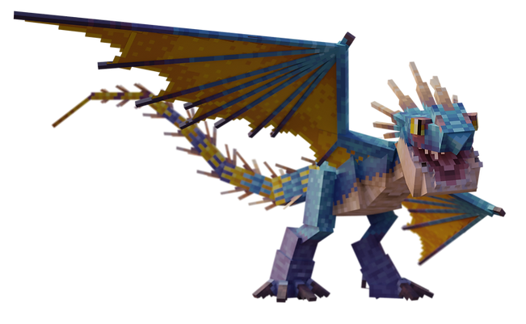
Variant 1
Deadly Nadder
Bleu standard
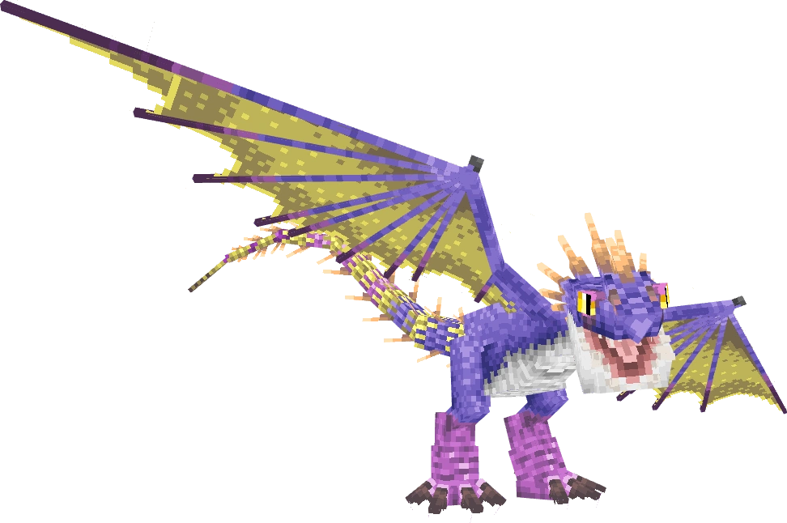
Variant 2
Kingstail
Pourpre royal
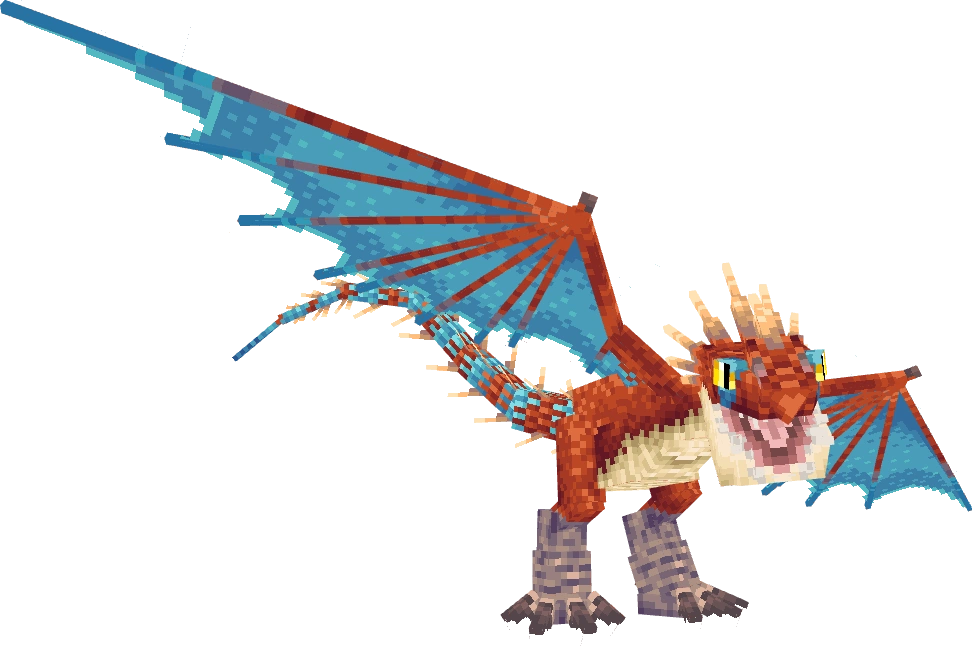
Variant 3
Scardian
Marbré sombre
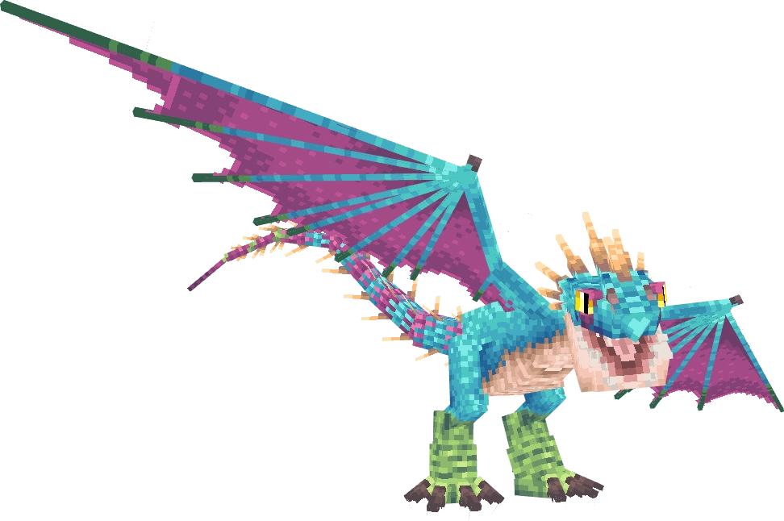
Variant 4
Springshedder
Vert printanier
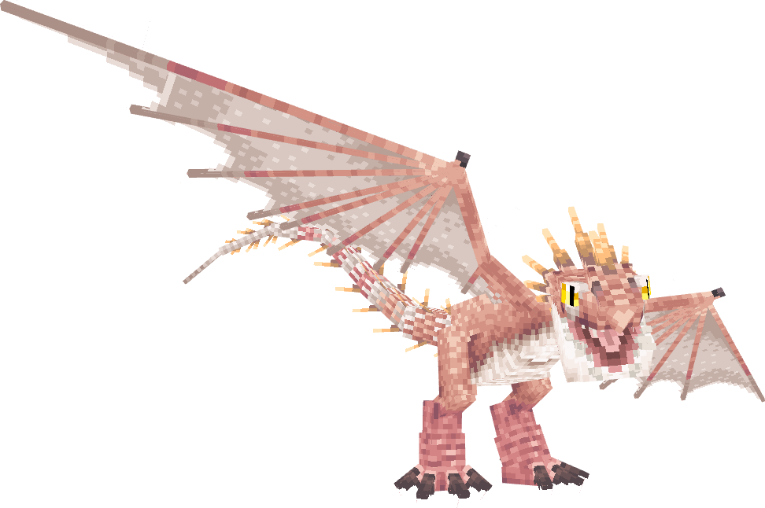
Variant 5
Hjarta
Tons de cœur ardent
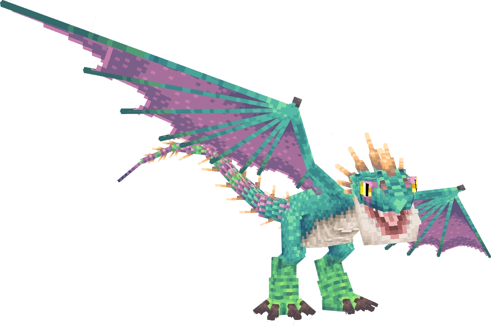
Variant 6
Bork Week
Variante festive
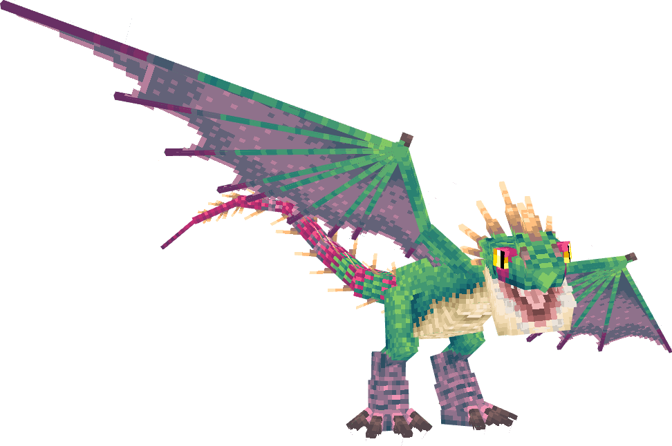
Variant 7
Flystorm
Tempête volante
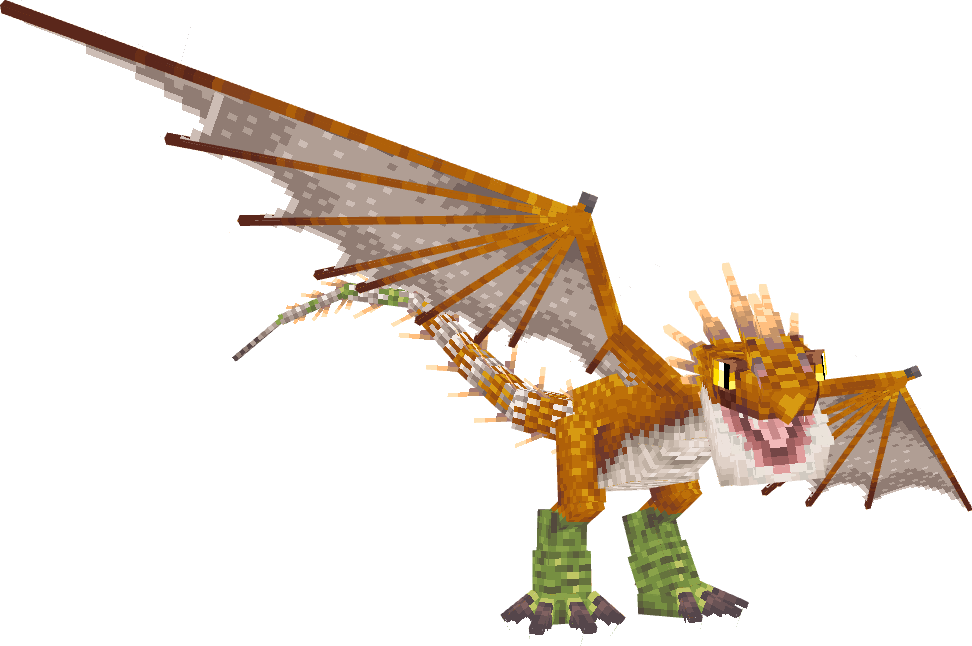
Variant 8
Hjaldr
Tons de bataille
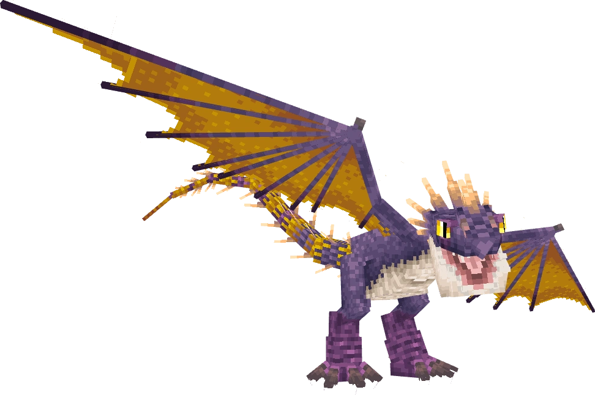
Variant 9
Barklethorn
Vert écorce épineuse
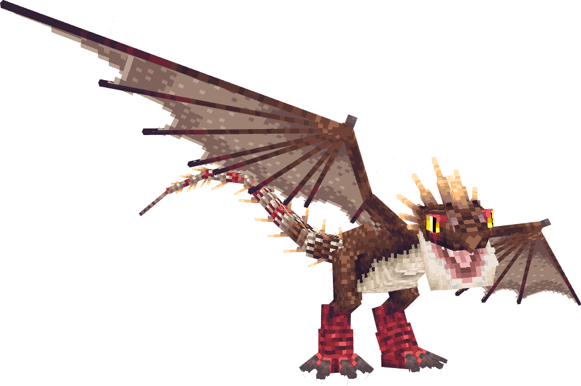
Variant 10
Lethal Lancebeak
Lance et bec mortels
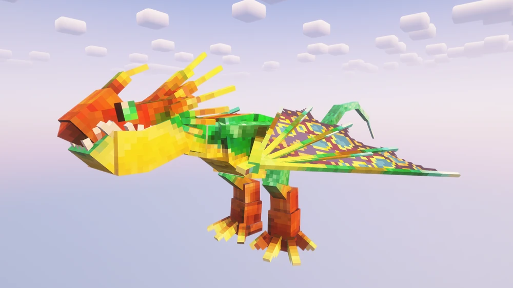
Variant 11
Seedling Stormpest
Tempête naissante
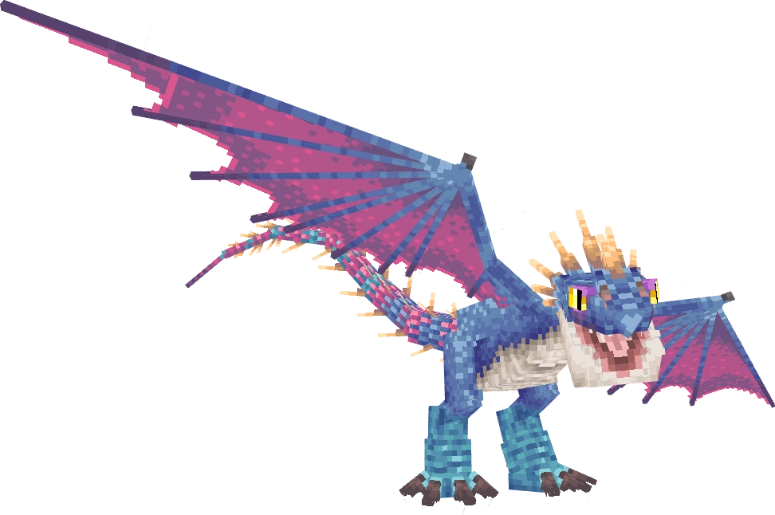
Name tag
Stormfly
Renomme un Nadder « Stormfly » via étiquette — réf. Astrid
Trivia
§ 7- Le dragon le plus diversifié du codex avec 12 variantes.
- Habitat éclaté en 4 groupes biome — il s'adapte à presque tous les climats tempérés.
- Variante Stormfly accessible uniquement par renommage via étiquette de nom (référence à Astrid dans le film).
- Spawn de piques fixé en S32 : avant, elles partaient depuis la queue. Désormais : spawn à hauteur des yeux, direction = regard direct, trajectoire parabolique.
Commande /summon
§ 8/summon isleofberk:deadly_nadder ~ ~ ~ {variant:1}
Variantes 1 à 11. Stormfly s'obtient par renommage via name tag.